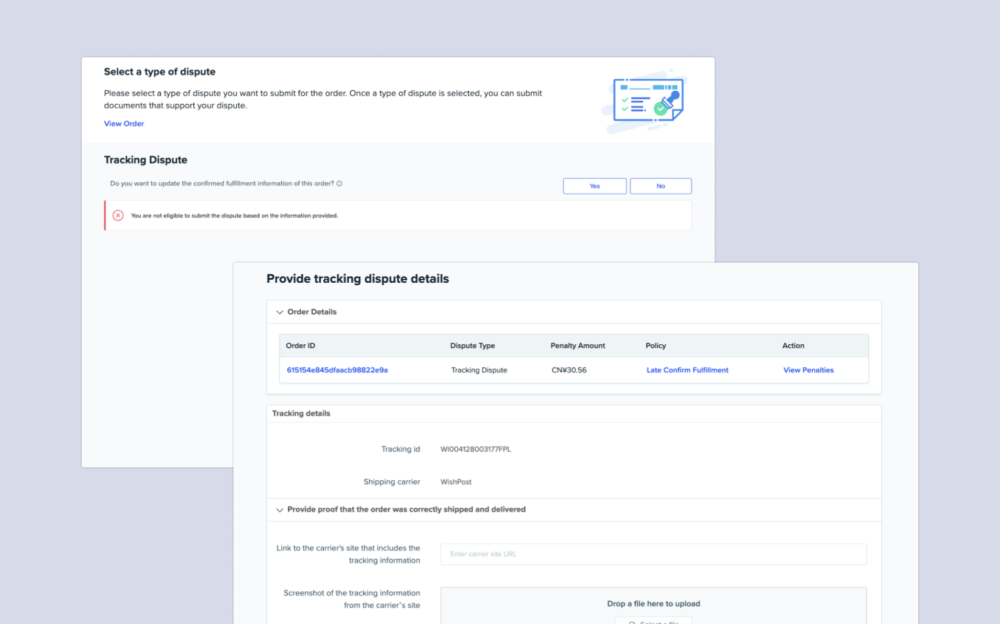
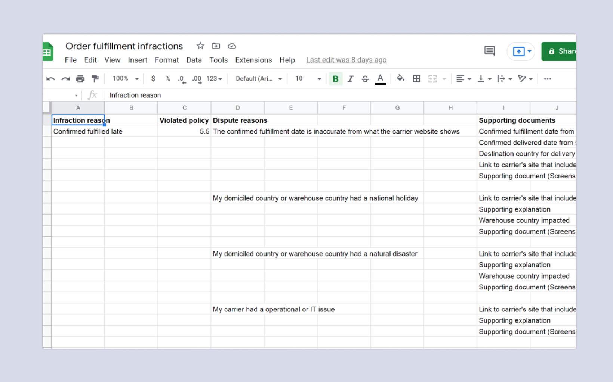
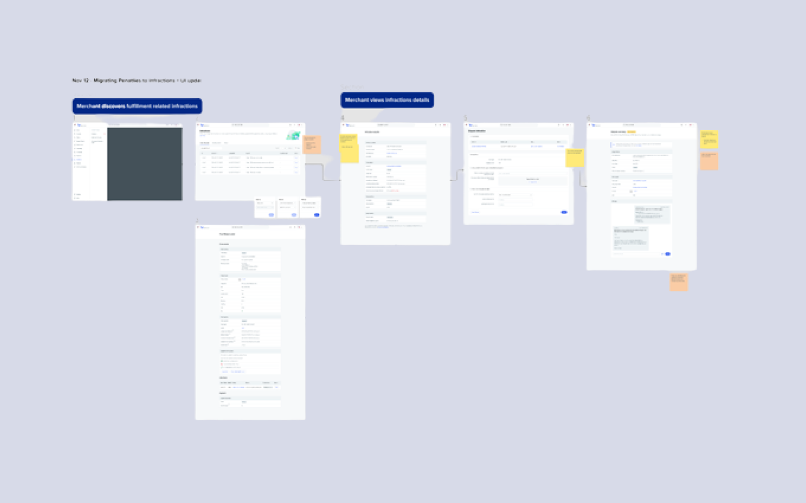
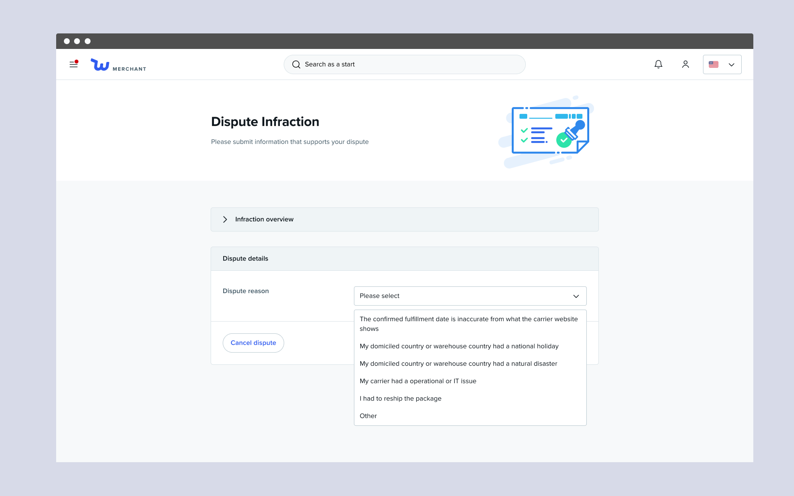
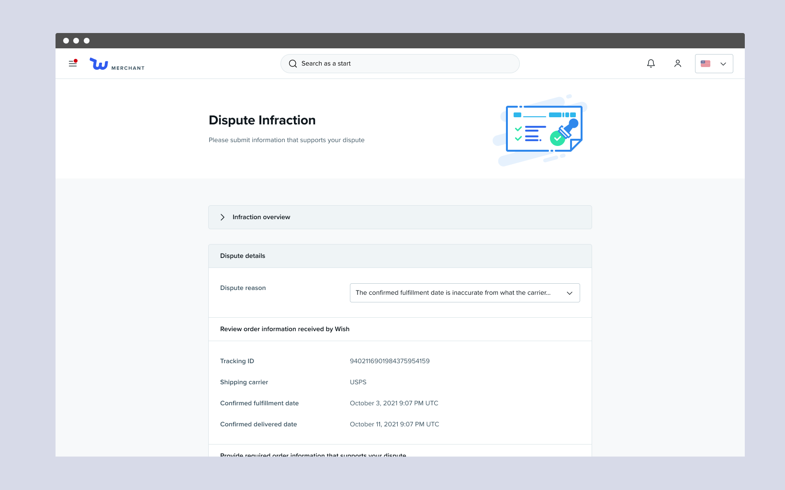

Context
Wish has two types of policy enforcement methods: penalties, which involves issuing fines and payment withholdings, and infractions. Penalties and infractions act as two separate entities, each with their own pages and dispute processes. With the launch of the new seller standards program, Wish wants to move away from the concept of fines. This new direction stems from several reasons:
-
Strategy change: Instead of using fines to prevent bad behavior, we want to hold merchants accountable to each of their infractions. Each infraction would affect their seller standards score and ultimately impact their overall impression allocation and commission rates on our platform.
-
Operational risk: There's the risk of issuing fines and not being able to collect them from merchants.
-
PR issues: Monetary penalties are uncommon in marketplaces and merchants view fines as a way for the Wish platform exploit sellers and take their money.
While we want to improve merchant satisfaction, we still want to hold merchants accountable to any policy violations. As part of this project, we want to migrate existing order fulfillment related policy violations from penalty to infractions and enable merchants to dispute these infractions if needed.
The Problem
Merchants need to be able to dispute the infraction in case it was wrongfully issued. We planned to use the same infraction dispute process for the policy violations previously enforced by penalties. However as we were auditing the existing infraction dispute flow, we realized that this isn’t something we can just simply transfer over.

The existing infraction dispute page uses the same interface as our internal tool
These pages share the same UI as the one our internal team uses to review dispute requests. It shows miscellaneous information that do not help merchants get through the dispute process. These pages have been neglected over the years and looks out of place compared to the rest of the platform.

The dispute process doesn't change depending on infraction type or dispute reason
Wish does not ask merchants why they are disputing the infraction. This is problematic because it is unclear what types of supporting document and information the merchant is supposed to upload. This also makes it harder for our internal team to review the dispute requests.
How could we revamp the infraction dispute flow while reusing aspects of existing pages?
Project Goals
We needed to revamp the existing infraction dispute flow quickly to launch this alongside the new updates for the seller standards program. Our primary goals were to:
-
Migrate existing order fulfillment related policy violations from penalties to infractions
-
Improve the infraction dispute process to guide merchants
The Approach
To tackle this project, I focused on working with PMs, content strategists, merchant compliance team members, and engineers to understand the current state of things and brainstorm what we could do to make it easier for merchants to review and dispute an infraction and for our internal team to review these requests.

1. Audit existing penalty and infraction pages

2. Solidify the content we want to show to merchants

3. Design a proposal with given context

4. Review with relevant teams for feedback and reiterate
Improved Dispute Flow
To improve the overall infraction page and to help guide merchants through the dispute process, we designed with the merchants in mind and allowed merchants to indicate their dispute reason and specify what is needed to resolve the dispute. Along with these changes, we updated the UI to match the overall look and feel of the platform.

Separating the infraction details from the dispute process
Talking with an account manager, I learned that what merchants care the most about when they receive an infraction is why they received it and what can they do to resolve it. Unlike before, where the infraction details and dispute form lived on the same page, merchants will now see a page dedicated to why they received an infraction. This page keeps the same level of transparency as the previous, but the information is easier to scan.

Allowing merchants to indicate dispute reason
Previously merchants were asked to "provide evidence" to dispute their given infraction. By asking merchants to select their dispute reason, Wish can offer more guidance to merchants further in the process.

Customizing the form depending on dispute reason
Merchants are asked to review information received by Wish and to provide information and documents specifically requested by our merchant compliance team to review the dispute requests.
Results
My team and I launched the changes in February 2022 alongside the release of the new seller standards program. As part of the project, we removed the concept of fines, which previously impacted roughly 20% of merchants.
The team and I are excited to have worked on this project and taking early steps to make Wish a more attractive marketplace to sell in. With this new policy change and fine depreciation, we've implemented a corrective process, instead of an exploitive one, and are taking steps to make Wish a more attractive marketplace for merchants to sell in.